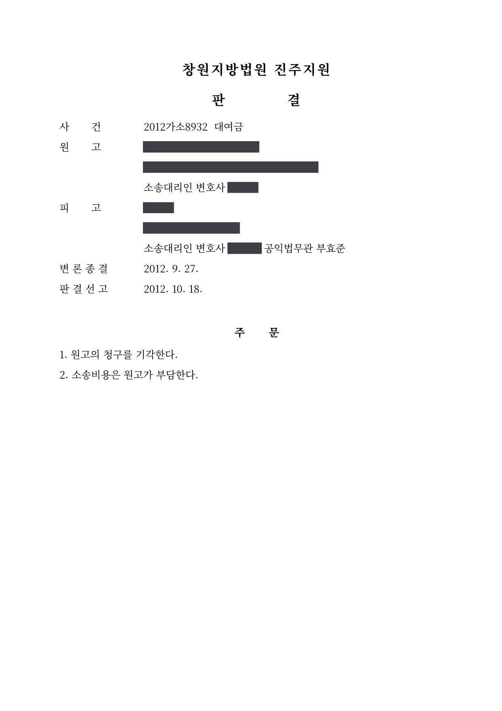

대여금 청구에 대한 방어 소송
창원지방법원 진주지원 2012가소8932 · 피고 대리 · 담당변호사 부효준
판결문

사건의 요지
원고가 2,000만 원의 대여금과 연 18%의 이자를 청구한 소액사건에서 피고를 대리한 사건입니다. 법원은 원고의 청구를 전부 기각하고 소송비용을 원고가 부담하도록 하였습니다.
사건의 주요 내용
원고가 피고를 상대로 대여금 2,000만 원과 이에 대하여 2007년 7월부터 소장 송달일까지 연 18%, 그 다음 날부터 다 갚는 날까지 연 20%의 비율로 계산한 돈의 지급을 구한 소액사건입니다. 부효준 변호사는 청구를 받은 피고를 대리하였습니다.
판결문에는 소액사건심판법 제11조의2 제3항에 따라 이유가 기재되어 있지 않아 쌍방의 구체적인 주장과 판단 근거는 확인되지 않지만, 2012년 9월 변론을 종결하고 약 3주 뒤 선고된 판결에서 원고의 청구는 전부 기각되었습니다.
법원의 판단
법원은 2012년 10월 원고의 청구를 기각하고 소송비용은 원고가 부담하도록 하였습니다. 원고가 주장한 2,000만 원의 대여금과 연 18%의 비율로 계산한 이자·지연손해금 청구가 모두 받아들여지지 않아, 피고는 원고에게 어떤 금액도 지급할 의무가 없다는 결론이 되었습니다.
이 사건이 보여 주는 것
대여금 청구 소송에서는 돈이 오간 사실만으로 대여가 인정되는 것이 아니라, 돌려받기로 약정하고 빌려 준 돈이라는 점을 청구하는 쪽이 증명해야 합니다. 청구를 받은 쪽에서는 금전이 오간 경위와 성격, 이미 변제하였는지 여부를 송금내역·문자 등 자료로 구체적으로 다투는 것이 중요하며, 청구가 전부 기각되면 소송비용도 상대방이 부담하게 됩니다.
비슷한 처분을 받으셨다면
행정처분은 처분이 있음을 안 날부터 90일 이내에 행정심판이나 취소소송으로 다투어야 하고, 기간이 지나면 돌이킬 수 없는 처분은 집행정지를 서둘러야 합니다. 처분서를 받은 날짜부터 확인해 드립니다.